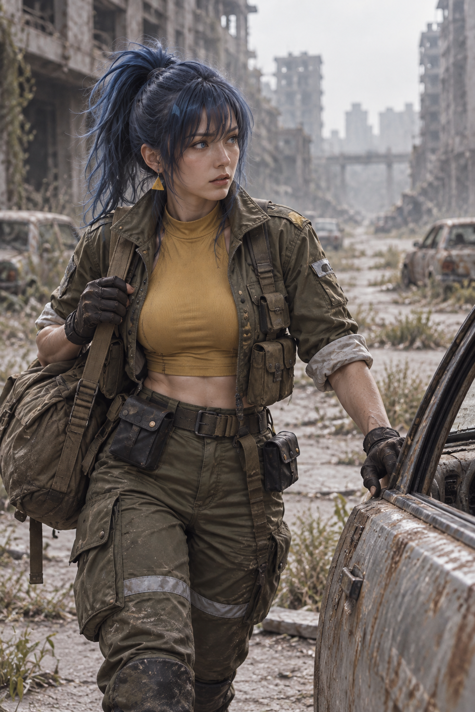
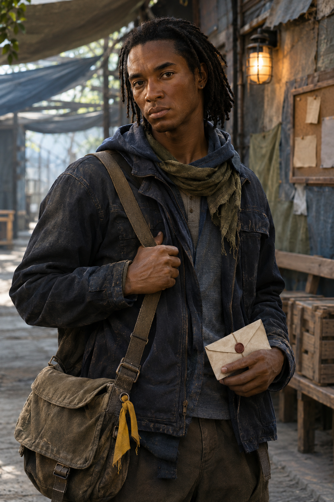
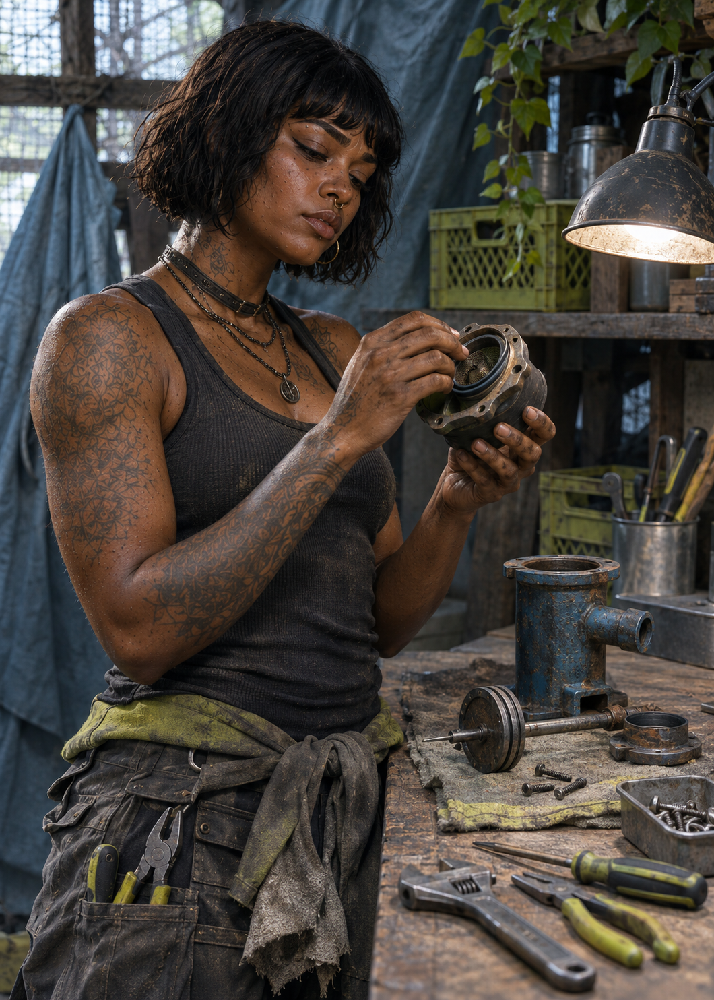

DOSSIÊS INDIVIDUAIS // EQUIPE, FAMÍLIA E VÍNCULOS
NINGUÉM
SEGUE SÓ.
Os Hellsings são feitos de quem escolheu ficar ao lado deles. Cada arquivo acompanha uma vida por seus próprios períodos, das lembranças anteriores ao Dia D aos registros do presente.
NÚCLEO CONECTADO // ARQUIVOS ATIVOS
Pessoas que
fazem parte.
Os retratos seguem a época a que pertencem. Quando o arquivo ainda não tem imagens de um período, o registro informa sem misturar fotos de outras fases.
Lana
Whitmore.
Aprendeu a manter abrigos em contato quando as redes caíram. Esposa de Nathan Salvatore Connor e parte do comboio Hellsing.
Sally
Ward.
Sonhava vestir um distintivo. Depois do Dia D, um encontro com Nicolai mudou o rumo de duas vidas.
Hilary
Caldwell Ashford.
Depois de encontrar nos Connor um lugar seguro, Hilary transformou a experiência em cuidado para quem ainda espera por ajuda.
Sophie
Romanoff.
Esposa de Alucard Myers Connor. Seu dossiê preserva os registros próprios de Sophie, enquanto as imagens do casal ficam no arquivo de vínculos.

Leona
Foi treinada para observar e reagir. Hoje usa essa formação para explorar edifícios, abrir rotas de saída e proteger a equipe sem avançar às cegas.

Darius
Bennett.
Marido de Chloe. Sua história em desenvolvimento o apresenta como técnico de rádio, dedicado a manter os abrigos conectados.

Micah
Bennett.
Filho de Chloe e Darius. Na proposta atual, leva recados entre abrigos e registra quem partiu e conseguiu voltar.

Imani
Carver.
Esposa de Luke e mãe de Asha e Nyla. O perfil em desenvolvimento a apresenta como educadora e organizadora da vida nos abrigos.

Asha
Carver.
Filha de Luke e Imani. Na proposta atual, recupera ferramentas e equipamentos para que uma missão tenha sempre outra saída.
Nyla
Carver.
Filha de Luke e Imani. Seu arquivo a descreve guardando histórias e nomes da comunidade em cadernos protegidos.

Amelia
Esposa de John. O retrato individual preservado não tem data identificada; os registros em que aparecem juntos são anteriores à morte dele.